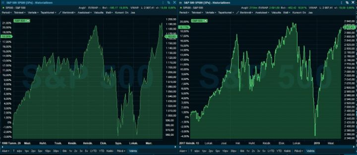
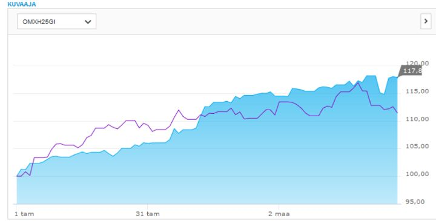
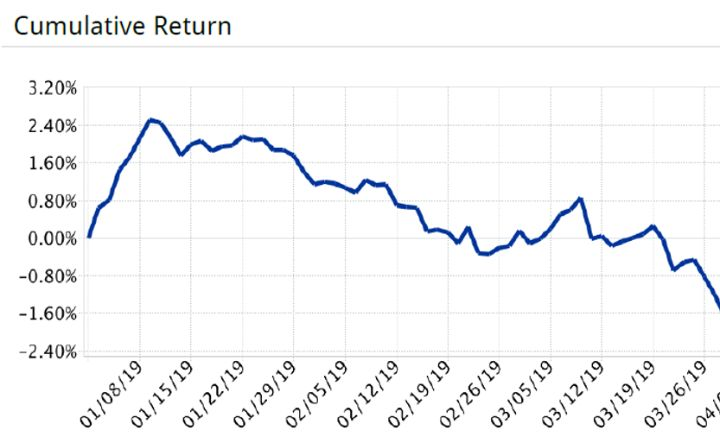
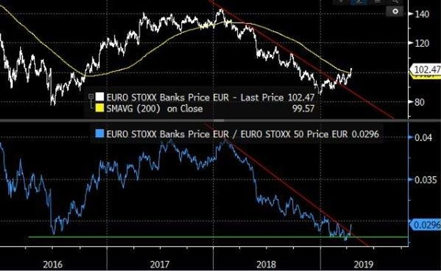

Ensimmäisen neljänneksen jälkiviisastelut
Vuodenvaihteessa markkinoilla nähtiin klassinen nousumarkkinan korjausliike. Tämä on tietenkin selvää vasta näin jälkikäteen. Jälkiviisausharha takaa, että olisi pitänyt nähdä, ettei markkinat ajaudu syvempään laskuun.
Jälkikäteen katsottuna korjausliike oli hyvin samankaltainen vuoden 1998 Aasian talouskriisistä lähtenyt korjaus (kuvassa vasemmalla). Molemmissa tapauksissa nousumarkkinat olivat jatkuneet jo poikkeuksellisen pitkään. Myös tuolloin arvostustasot olivat jo korkealla korkojen ollessa historiaan nähden matalalla. Yhdysvalloissa molemmissa tapauksissa laskettiin noin 20% huipuista.

Paluu ylöspäin oli kuitenkin tällä kertaa erilainen. Harvemmin on nähty, että 20% korjausliikkeestä noustaan V-muodossa näin nopeasti takaisin ylimmille tasoille. Nyt tämäkin nähtiin. Olimme joulukuussa ja alkuvuodesta sitä mieltä, että markkinat ylireagoivat talousnäkymien heikkenemiseen. Ostimme kuitenkin liian vähän osakkeita ja muita riskiassetteja. Jälkikäteen se näyttää hieman hölmöltä.
Vaikuttaisi siltä, että monella muultakin jäi ostamatta riittävästi. Sentimentti ja sijoittajien riskipainot jäivät melko alhaalle, vaikka pörssit nousivat 10% hyvin nopeasti. Tämä toimi polttoaineena lisänousuille.
Vuonna 1998 korjausliike oli W-muotoinen, mutta sieltä uusiin huippuihin nouseminen ei riittänyt. Osakkeet nousivat vielä tästäkin yli 30% seuraavan puolentoista vuoden aikana.
Emme sentään ennakoi tämän toistuvan, mutta olisi naiivia ajatella, ettei se ole mahdollista. Tilanne on hankala. Korkeahkot arvostustasot, pitkälle edennyt sykli etenkin Yhdysvalloissa ja Kiinassa, ja paljon epävarmuustekijöitä. Silti historiaa katsomalla emme voi mitenkään poissulkea jyrkänkään nousun mahdollisuutta.
Vaikka loppunousua ei tulisi, ei välttämättä tarvitse tulla myöskään syvää karhumarkkinaa. Jos kuitenkin saamme presidentti Trumpin toivoman kurssirallin, nousee myöhemmän syvemmän taantuman ja kurssilaskun mahdollisuuden todennäköisyys keskipitkällä aikavälillä.
Osakeriskiä?
Meillä on se etu, että pystymme myös markkinaneutraalisti luomaan arvonnousua salkkuumme. Kysymys kullakin hetkellä vain kuuluu, kuinka paljon haluamme allokoida osakemarkkinoille?
Jos hoitaisimme asiakkaiden varoja, olisi varmasti suurempi paine voittaa markkinat, vaikka ne nousisivat jyrkästi. Meidän kohdallamme kysymys on kuitenkin enemmän, haluammeko tässä tilanteessa tavoitella 30% tuottoa markkinaneutraalisti vai odotusarvoisesti 35-40% tuottoa ottaen voimakkaasti osakeriskiä?
Teimme viime vuoden lopulla strategian, jonka mukaan pyrimme tämän syklin lopun pitämään markkinariskin alle 50%. Samoin toimintojen alkuvaiheessa riskipainon ylösajamisen päätimme tehdä asteittain.
Tästä syystä tammikuun alussa lähdimme liikenteeseen noin kolmanneksen riskipainolla. Osakkeiden nousun myötä laskimme sen markkinanäkemyksemme mukaisesti alle 20%:n ja maaliskuun lopussa nollaan. Käytännössä nettoriskimme oli Q1:llä keskimäärin 20-25%.
George Sorosilla oli strategia aloittaa vuosi varovaisesti ja riskeerata voimakkaammin voitetuilla rahoilla. Se voi kuulostaa epätehokkaalta, jopa taikauskoiselta. Sitten toisaalta, George Sorosin Quantum oli 25 vuoden aikana maailman paras hedge fund (ennen kuin Renaissance Technologies otti sen tittelin).
Olemme uusi yritys. Olemme luoneet tyhjältä pöydältä strategian ja uudet systeemit. Korkoa korolle peli on maraton, ei sprintti. Tulee vielä aika, jolloin otamme enemmän riskiä. Näkemyksemme mukaan markkinoiden riskituotto kohti kesää mentäessä ei houkuta lisäämään riskiä juuri nyt. Toki tilanne kehittyy ja lähdemmekin, kuten aina, avoimin mielin uuteen tuloskauteen.
Ensimmäisen neljänneksen tuotot
Salkkumme kokonaistuotto jäi kulujen jälkeen noin 10%:iin, samalla kun moni osakeindeksi nousi enemmän. Toisaalta, kuten sanottua, tuottomme syntyi keskimääräisellä 20-25% nettoriskillä, joten se luo luottamusta jatkoa ajatellen. Kun pörssit laskevat tai sahaavat paikallaan, markkinaneutraalit tuotot näyttävät taas varsin hyvältä.
Suurin osa pääomistamme on Nordnetissa keskittyen Pohjois-Euroopan markkinoille. Sieltä tuotot olivat hyviä. Odotusten mukaisesti tilinpäätöskaudella kulmakerroin oli jyrkimmillään.
Nordnetin graafissa vertailuindeksinä on OMXH25-tuottoindeksi. Sininen alue kuvaa meidän salkkumme kehitystä, violetti vertailuindeksiä (Nordnetin valikoimassa ei erityisen hyvää vertailuindeksiä, joten tuttu OMXH25GI kelvatkoon).

Sen sijaan Interactive Brokersin tili kärsi siitä, että aloimme alkuvuoden nousun jälkeen suojaamaan koko netto-osakepositioitamme johdannaisilla. Markkinat kuitenkin jatkoivat nousua. Varovaisuus oli osa strategiaa, joten suojauksen kuluja on vaikea pitää karkeana epäonnistumisena. Jälkiviisaana kaikki on helpompaa. Alla kuvaajassa näkyy, että ensimmäisen neljänneksen jäljiltä pitkälti nettoshorteista koostuva IB:n salkku oli reilun prosentin miinuksella.

Suurin ongelma neljänneksen tuotoissa ei ollut ehkä markkinariskin pienuus, vaan yksittäisten ideoiden panoskoko. Näkemykset olivat siis usein oikeita, mutta hyödyt liian pieniä. On mukavaa tehdä jatkuvasti tasaista tulovirtaa, mutta jatkossa hyvä kokonaistuotto vaatii, että ideoihin luotetaan ja panostetaan sen mukaan. Huolellisen analyysin myötä myös yksittäisiin osakkeisiin voi laittaa suurempia panoksia.
Positioita ja näkemyksiä
Aina ei ole mahdollista löytää vahvan luottamuksen näkemyksiä markkinoilta. Alkuvuosi on ollut meille tällaista aika. Olemme aikaisemmin kertoneet jo muutamista sijoituksista. Seuraavassa on kuvattu muutamia lisää.
Makro
- Öljy: Öljy oli uuden yhtiön ensimmäisiä sijoituksia joulukuussa 2018. Sijoitus tuotti salkulle noin prosentin tuoton, kun se tammikuussa nousi 20%. Koska emme uskoneet välittömään taantumaan, öljy 50 dollarissa ei ollut kestävällä tasolla. Nyt Brent on noussut yli 70 dollarin. Koska talousnäkymät ovat edelleen epävarmat ja öljyn hintaa nostaa mahdollisesti väliaikaiset tuotannon vähennykset, ei tuotto/riski-suhde ole enää riittävän hyvä. Rakenteellisesti öljyn tuotannon pysyminen kulutuksen perässä tulee olemaan hankalaa seuraavat viisi vuotta. Sen jälkeen öljyn kysynnän kasvu hidastuu selvästi ja tilanne voi helpottua. Katsomme silti mahdollisuuksia olla sektorilla mukana, mutta ehkä vasta kun talous ja hinnat joustavat alaspäin.
- Venäjä: Maailman halvin pörssi, johon kukaan täysjärkinen ei halua sijoittaa. Kun kukaan ei odota mitään positiivista, pienikin positiivinen signaali voi nostaa kursseja. Venäjällä on heikko väestörakenne, mutta rikkaat luonnonvarat. Venäjä voi olla niitä harvoja maita, jotka voivat hyötyä ilmastonmuutoksesta. Jos miettii, mistä maasta Länsimaissa tuskin kirjoitettaisiin positiivisia lehtijuttuja, Venäjä olisi varmaan Pohjois-Korean ja Iranin kanssa siellä kärjessä. Kuitenkin jotain positiivisia hiljaisia signaaleja on, että yhtiöiden hallintotapa on paranemaan päin. Suurempi uudelleenhinnoittelu toki vaatisi poliittisen tilanteen muutosta. Toisaalta, jos se tapahtuu, kurssit ovat jo paljon korkeammalla.
Momentum
- Getinge: Lähdimme mukaan Getingeen Q4-tulospäivän nousuun. Yhtiö on ollut pidempään ongelmissa sekä kasvun että Jenkkilän regulaattorin (FDA) kanssa. Tuolloin tammikuun lopussa yhtiö kuitenkin raportoi positiivisesta orgaanisesta kasvusta ja selvästi odotuksia paremmasta kannattavuudesta. Yhtiöllä on takanaan niin johdon, strategian kuin myös yhtiörakenteenkin uusiminen (Arjon spinoff). Kenties nyt on uuden kasvuvaiheen aika? Tästä lähdimme ottamaan selvää. Osake onkin noussut ~30% ja olemme jo hieman kevennelleet. Tarkoitus on kuitenkin katsoa Q1-tulos ja arvioida tarkemmin, miten tarina kehittyy.
Value
- Pankit: Yksi isoimmista positioista alkuvuotena on ollut maaliskuussa tehdyt sijoitukset pankkisektorille. Treidit koostuivat kahdesta osasta: EURO STOXX PANKIT / EURO STOXX 50 -haarasta ja longista pohjoismaisiin pankkeihin, molemmat noin 10% painoilla salkusta. Pankit ovat hyljeksitty sektori ja kansainvälisten pankkien tekemien positiokyselyjen mukaan sijoittavat ovat railakkaassa alipainossa etenkin Euroalueen pankkeja. Ongelmat ovat pitkälti tiedossa ja heijastuvat arvostustasoihin. Puheet negatiivisen ohjauskoron aiheuttamista haasteista pankkien tuloksentekokyvylle ovat myös nostaneet päätään. Pankit ovat talouden verisuonet, joita ei kannata liian pitkäksi aikaa tukkia. Maaliskuun alussa alkoi näkymään orastavia merkkejä sektorin reilun vuoden jatkuneen laskutrendin katkeamisesta. Suhteessa muuhun markkinaan sektori oli samoilla tasoilla kun 2016, josta se nousi seuraavassa vuodessa suhteessa EURO STOXX 50-indeksiin 40%. Pankit ovatkin nousseet ja nyt myös itse spread on lähtenyt toimimaan.

Pohjoismaisiin pankkeihin sijoitimme, kun maaliskuun lopussa paniikki rahanpesuihin liittyen yltyi kohtuuttomaksi. Teimme analyysiä vastaavista tapauksista pankeissa ympäri maailman.
Päähuomiomme olivat:
- Lähes kaikki suuret pankit ovat joutuneet ongelmiin rahanpesun takia. (Kirjoita Googleen lähes mikä tahansa suuri eurooppalainen pankki ja ”money laundering”.) Kymmenen vuotta sitten juuri millään pankilla ei ollut täysin vedenpitävät systeemit.
- Sakot näistä tapauksista ovat olleet suhteellisen matalia suhteessa odotuksiin pohjoismaisia pankkeja kohtaan. Esimerkiksi Swedbankin markkinan implisiittinen odotus yli 5 miljardin euron sakoista on lievästi sanottuna lennokas. Ensinnäkin pestyt summat eivät ole poikkeuksellisen suuria(poisluettuna Danske). Toiseksi kyse ei ole ollut terrorismin tai edes huumerahojen pesemisestä, kuten BNP Paribaksen ja HSBC:n tapauksessa. Rahanpesu on ollut pääasiassa venäläisille ennen kuin Ukrainan sanktiot tulivat voimaan. Tästä syystä rikkomus ainoan ison sakottajan eli Yhdysvaltojen kannalta on vähemmän vakava.
- Sakot usein suhteutetaan pankin kokoon.
Vaikka ongelmat Nordeassa ja SEB:ssä ovat rajatumpia, myös näitä pankkeja myytiin reilusti Swedbankin mukana. Ostimme siis Danskea, Swedbankia, Nordeaa ja SEB:iä. Satuimme osumaan päivälleen kurssipohjiin, joista osakkeet nousivat parissa viikossa 13%. Tämän voimakkaan nousun myötä myimme ylimääräisiä omistuksia ja siirryimme normaalimpaan painoon pohjoismaisissa pankeissa. Pankki-spread on kokonaisuudessaan edelleen päällä.
Jatko
Huhtikuun ensimmäiset viikot ovat olleet tähän mennessä vuoden parasta aikaa salkuillemme. Nyt alkava tuloskausi on valitettavasti etenkin Pohjoismaissa tiivistetty hyvin lyhyeen aikaan, mikä tietää meille pitkiä työpäiviä.
Olisi mielenkiintoista ja houkuttelevaa olla hyvin varma osakemarkkinan suunnasta jatkossa. Me silti valitsemme puolustuspelin ja pääoman suojelemisen, kunnes löydämme vahvemman näkemyksen talouden ja pörssien suunnasta.